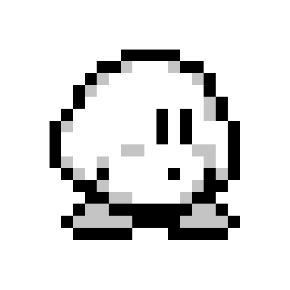
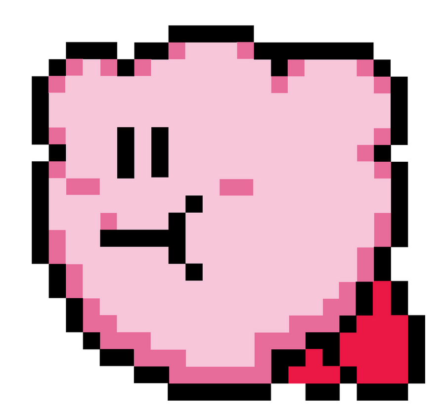

Le premier jeu Kirby sort sur Game boy en 1992 sous le nom Kirby's Dream Land. Il est édité par Nintendo qui souhaite faire " un jeu qui peut plaire à tout le monde ". C'est dans ce même jeu que le personnage Kirby apparaît pour la première fois. Au départ, son apparence toute ronde n'était qu'un brouillon permettant de simplifier le travail des animateurs, mais l'équipe de production s'est attachée à son design mignon et a décidé de le garder. Son nom vient de "John Kirby", un avocat qui a défendu Nintendo lors d'un procès.
Apparence de Kirby dans ses premiers jeux :
 Les cartouches de jeu Kirby's Dream Land 1 et 2 sur Game boy :
Comme "prévu", le personnage plaît au public et de nouveaux jeux sortent sur les consoles Nintendo les plus récentes. Quelques exemples : Kirby 64 : The Crystal Shards sur la Nintendo 64, puis Kirby : Super Star Ultra sur Nintendo DS, Kirby et le Pinceau arc-en-ciel sur Wii U, et prochaînement Kirby et le monde oublié sur Nintendo switch ! (sortie prévue pour le 25 mars 2022). De jeu en jeu, le concept et le design de Kirby évoluent (surtout après l'arrivée de la 3D) mais l'histoire du personnage reste la même ! Enfin, Kirby possède même son propre anime !